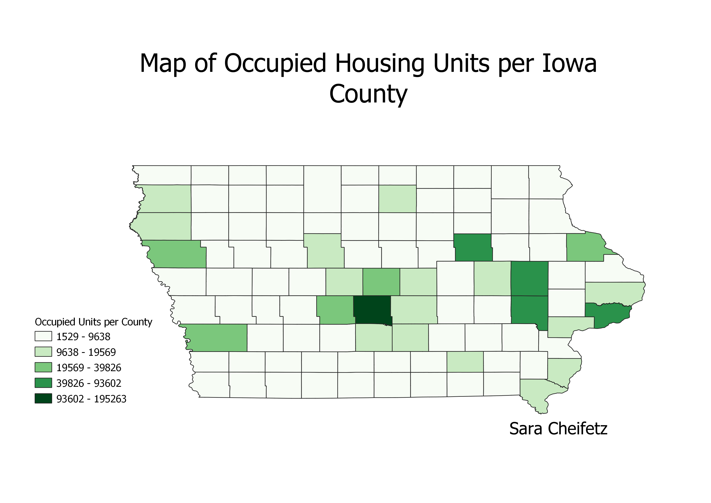

Homework 6 part 1: Census data choropleth
Sara Cheifetz
This map depicts the total amount of occupied housing units per county in the state of Iowa. The mode of the map is natural breaks, meaning that the data were grouped into sections of similar size based on what made logical sense based on the data set.

Data used for this project
CSV dataset
Link to shapefile